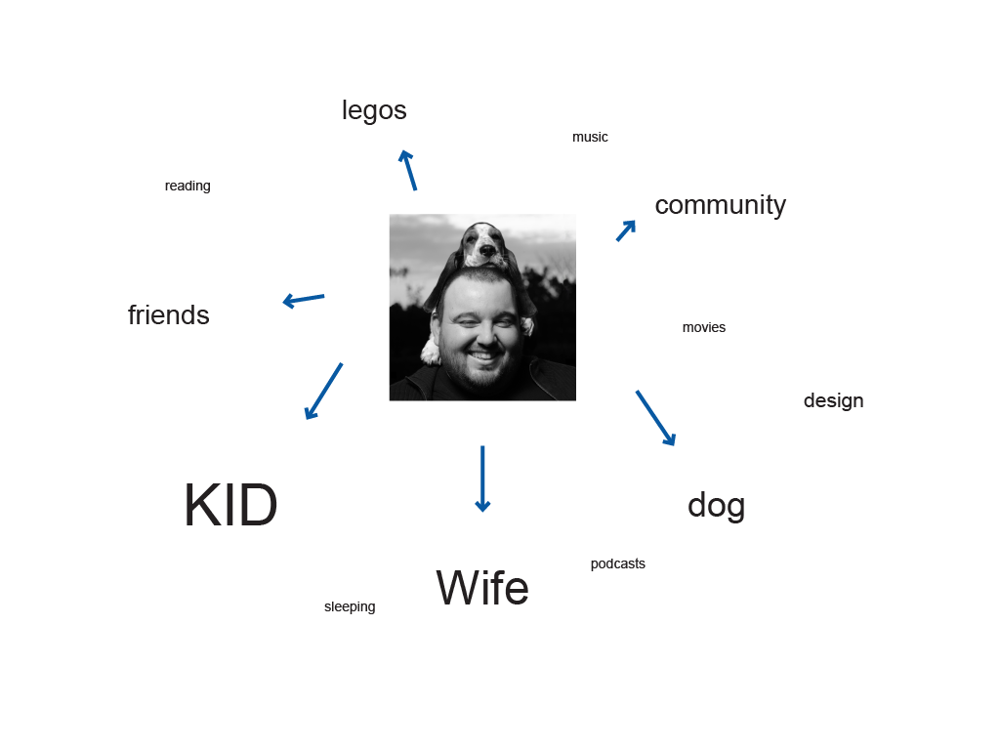
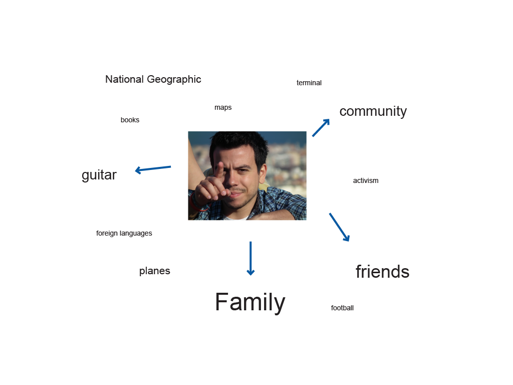

João Belchior (Setúbal) ++ responsive theming samurai
fidibiko & Demotix
d.o/irc jolidog (3 years 38 weeks)

Nuno Veloso (Barcelona) ++ Drupal ninja
nuno.cat & Demotix
d.o/irc nunoveloso/tanguito (5 years 32 weeks)

Mãos na massa!
com Drupal, podes criar coisas grandes com pouco esforço
um pouco perdido?
use the source, Luke!
já agora...
Reparaste que esta apresentação está em 3D? feita com impress.js*?
* também é open source ;)OBRIGADO!
(aplaude-se?)